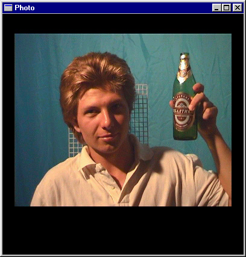
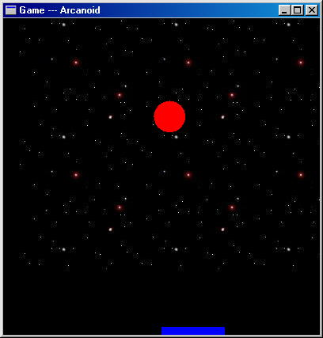
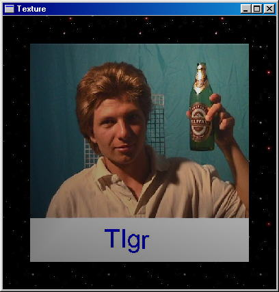
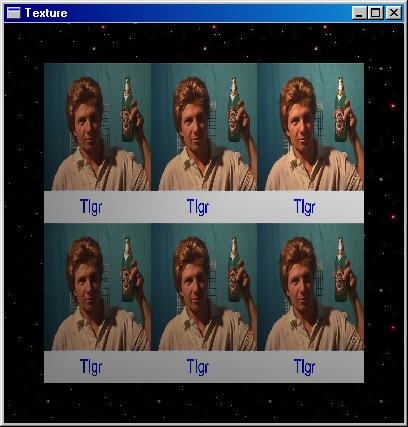
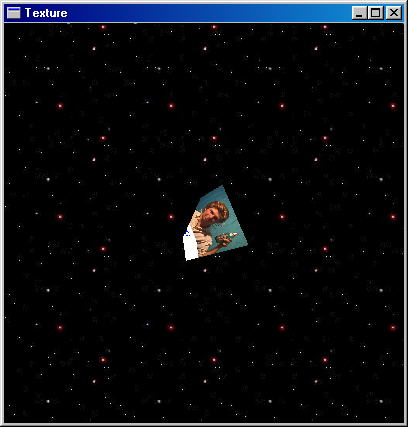
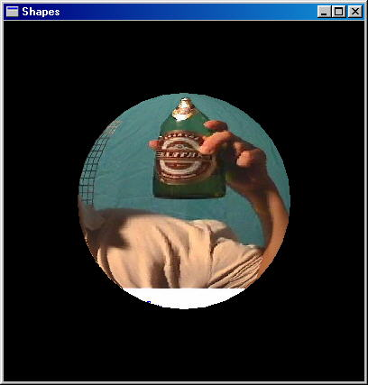
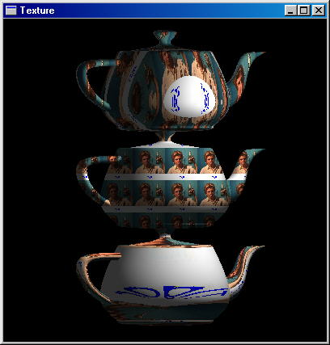
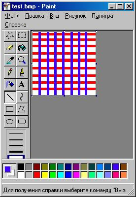
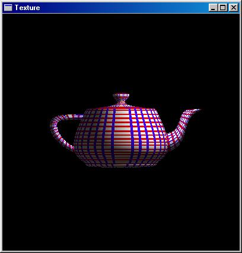

|
Chapter 5
Работа с картинками
5.1 Общие слова
Строить примитивные объекты вы уже научились. Но строить трехмерные сцены
с использованием только примитивов вам вряд ли придется, да и выглядят
они как-то схематично и тускло. Для того, чтобы их оживить, на примитивы
накладывают картинки - текстуры. В качестве фона сцены тоже полезно использовать
графическое изображение. Тем самым приложение сделается более живым и интересным.
Так что в этой главе мы научимся работать с изображениями.
5.2 Работа с изображениями
Существует множество графических форматов - bmp, pcx, gif, jpeg и прочие.
OpenGL напрямую не поддерживает не один из них. В OpenGL нет функций чтения/записи
графических файлов. Но поддерживается работа с массивами пикселей. Вы загружаете
графический файл, используя библиотеки других фирм, в память и работаете
с ними средствами OpenGL. В массиве данные о пикселах могут располагаться
разными способами: RGB, BGR, RGBA; могут присутствовать не все компоненты;
каждый элемент массива может занимать один байт, два, четыре или восемь;
выравнивание может быть по байту, слову или двойному слову. В общем, форматов
расположения данных о графическом изображении в памяти очень много. Я рассмотрю
один из них, наиболее часто применяемый, как мне кажется. Информация о
каждом пикселе хранится в формате RGB и занимает три байта, выравнивание
по байту. В Auxiliary Library есть функция auxDIBImageLoad(LPCSTR), которая
загружает в память bmp-файл и возвращает указатель на структуру:
typedef struct _AUX_RGBImageRec {
GLint sizeX, sizeY;
unsigned char *data;
} AUX_RGBImageRec;
Для простоты я буду пользоваться именно этой функцией. Среди прилагаемых
программ вы найдете мою утилиту для загрузки файлов из форматов pcx. Исходный
текст этой утилиты абсолютно переносим на любую платформу с компилятором
ANSI C.
В OpenGL имеются функции для вывода массива пикселей на экран(glDrawPixels),
копирования(glCopyPixels),
масштабирования(gluScaleImage). Здесь мы рассмотрим
только glDrawPixels. Все остальные функции работы с изображениями устроены
похожим образом. Для того, чтобы отобразить графический файл в окне OpenGL,
вы должны загрузить его в память, указать выравнивание, установить точку,
с которой начинается вывод изображения, и вывести его на экран. Раздобудьте
где-нибудь свою фотографию в формате BMP. Можете взять фотографию своей
девушки. Создайте новый проект. Объявите глобальную переменную -
AUX_RGBImageRec *image
Перед вызовом функции auxMainLoop в функции main вставьте строку:
image = auxDIBImageLoad("photo.bmp");
Выравнивание устанавливается вызывом
функции glPixelStorei с параметром GL_UNPACK_ALIGNMENT и вторым параметром - целым
числом, которое указывает выравнивание. Изображения выводятся прямо на
экран. Поэтому все происходит в двухмерных координатах. Позиция, с которой
начинается вывод изображения, указывается при помощи функции glRasterPos2d(x,y).
Также вы можете установить размер пикселя,
вызвав функцию glPixelZoom. Первый параметр
этой функции - ширина, второй - высота пикселя. Я вызываю эту функцию
с аргументами (1,1), что соответствует нормальному пикселю. Замените (1,1)
на (3,2) и вы увидите, как картинка растянется в три раза по горизонтали
и в два раза по вертикали. Это случилось, потому что теперь каждый пиксель
изображения соответствует прямоугольнику 3х2 в окне. И наконец, вывод осуществляет
функция glDrawPixels. Первые два параметра - это ширина и высота. Далее,
вы указываете формат, в котором хранится информация в памяти, и тип элементов
массива. Последним указывается массив данных.
В функцию display вставьте следующий код:
glRasterPos2d(-4.5,-3); // нижний левый угол
glPixelZoom(1,1);
glPixelStorei(GL_UNPACK_ALIGNMENT, 1); // выравнивание
glDrawPixels(image->sizeX, image->sizeY, // ширина и высота
GL_RGB, GL_UNSIGNED_BYTE, // формат и тип
image->data); // сами данные
Также в OpenGL имеется функция glBitmap для отображения битовых массивов.
Битовый массив - это последовательность байт, которые кодируют картинку
из двух цветов. Соответственно, каждый байт кодирует 8 пикселей. Среди
прилагаемых программ вы найдете мою утилиту pcx_2bpp. Она читает pcx-файл
формата один бит на пиксель и направляет на стандартный вывод массив на языке Си.

Исходный файл смотрите здесь.
Исполняемый файл здесь.
Моя фотография здесь.
5.3 Упражнение: "Фон для игры Arcanoid"
Найдите красивый фон в формате BMP. Можете опять взять свою фотографию.
Подложите этот bmp-файл в качестве фона в игру Arcanoid. Закомментируйте
разрешение всех тестов, кроме GL_DEPTH_TEST, в функции main. Возможно, я уже
говорил о том, что вы всегда должны помнить, что дополнительные параметры затормаживают
создание объекта, поэтому устанавливайте их очень осторожно. Часть из них
можно установить в функции main. Другие же лучше устанавливать и отменять
непосредственно при создании объекта в функции display.

Исходный файл смотрите здесь.
Исполняемый файл здесь.
Звездное небо здесь.
5.4 Создаем текстуру в памяти
Одного вывода изображений недостаточно для создания полноценных трехмерных
сцен. Часто возникает потребность накладывать изображение на трехмерные
объекты и поворачивать/сдвигать их. Для этих целей существую текстуры. Также
текстуры помогут вам покрыть весь объект в виде мозаики. Скажем, когда у
вас имеется кирпичная стена, то вам не надо загружать изображение с кучей
кирпичей. Достаточно загрузить один кирпич и указать, что эту текстуру нужно размножить
по всей плоскости.
Сначала мы разберем создание и наложение текстур на плоскость. Затем
рассмотрим наложение текстур на объекты, описанные в секции 4.1. И наконец, на все прочие, созданные из многоугольников;
в частности, тор и чайник.
Для того, чтобы наложить текстуру на объект, вы должны:
- Загрузить графический файл в память
- Создать имя-идентификатор текстуры
- Сделать его активным
- Создать саму текстуру в памяти
- Установить параметры текстуры
- Установить параметры взаимодействия текстуры с объектом
- Связать координаты текстуры с объектом
Первое вы уже научились делать в предыдущей секции. Создайте проект с
именем Texture. Объявите следующие глобальные переменные:
unsigned int photo_tex;
AUX_RGBImageRec* photo_image;
unsigned int space_tex;
AUX_RGBImageRec* space_image;
Переменные photo_tex и space_tex будут служить идентификаторами текстур.
А в photo_image и space_image мы загрузим bmp-файлы. Тут нужно отметить,
что текстуры в OpenGL должны иметь размер 2n x 2m,
где n и m целые числа. Это сделано для ускорения работы, т.к.
сжимать или растягивать такие текстуры быстрее и удобней. Вы, конечно, можете
загрузить изображение любого другого размера, но его придется масштабировать.
На мой взгляд, это неправильно. Результат масшабирования вас может и не
устроить. Так что я использую графические файлы с размером, кратным степени
двойки. Мне удобнее отредактировать изображение в каком-нибудь графическом
пакете, урезать его или наоборот дополнить, чем потом выяснять, почему оно
искажается. Впрочем, тут многое зависит от конкретного случая. Художнику,
который делает текстуры, все равно какого размера ее делать, поэтому легче
попросить его сделать изображение с подходящими размерами. Вставьте следующий
код в функцию main.
photo_image = auxDIBImageLoad("photo.bmp");
space_image = auxDIBImageLoad("space.bmp");
Картинки возьмите из моей программы - Texture. Фотографию можете взять свою.;-)
Только размер ее желательно оставить 512x512.
Теперь вы должны создать имя-идентификатор текстуры. Его нужно создавать,
когда у вас в приложении используется более одной текстуры, чтобы была
возможность как-то их различать. В противном случае, когда текстура только
одна, идентификатор ей не нужен. В следующем примере, при наложение текстуры
на сферу, у нас будет ровно одна текстура, и я покажу вызовы каких функций
необязательны. А пока, я предполагаю, что вам нужно использовать несколько
текстур. Кстати, я просматривал много примеров при написание книги. Среди
них были примеры из широко известной Red Book, примеры из MSDN, из интернета
и других источников, но все, что касалось текстур, работало только с одной
текстурой. Для элементарной программы-примера, конечно, подойдет и одна
тектура, а вот для серьезных приложений вряд ли. Мы хотим
написать серьезные приложения, поэтому нам придеться использовать
нескольких текстур. Функция glGenTextures принимает на вход два параметра. Первый
указывает количество имен-идентификаторов текстур, которые нужно создать.
Второй параметр - указатель на массив элементов типа unsigned int. Количество
элементов в массиве должно совпадать с числом, указанным в качестве первого
параметра. Например, следующий код создает десять имен текстур.
unsigned int names[10];
glGenTetures(10, names);
Хранить идентификаторы текстур в массиве не всегда удобно. Такой способ
подходит для хранения задних фонов или типов стен - кирпичная, каменная
и т.п. В общем, в массиве хранят те элементы, между которыми есть что-то общее.
В нашем случае, два изображения связаны, т.к. используюся
в одном приложении, поэтому я создал два различных идентификатора. Так что
добавьте следующий код в функцию main.
glGenTextures(1, &photo_tex);
glGenTextures(1, &space_tex);
Теперь мы привязываемся к текстуре фотографии, т.е. делаем ее активной.
Для этого служит функция glBindTexture. Первый
параметр должен быть GL_TEXTURE_2D или GL_TEXTURE_1D. Он показывает, с одномерным
или двумерным изображением будем работать. Все примеры здесь касаются двумерных
тектур. Для одномерной тектуры я просто не нашел красивого примера. Впрочем,
в Red Book есть пример с одномерной текстурой. Там чайник разукрашивают
красной лентой. Где взять эти примеры и многое другое смотрите в приложении
'A'. Второй параметр glBindTexture - идентификатор, который мы создали выше
при помощи glGenTextures. Теперь добавьте вызов этой функции в main.
glBindTexture(GL_TEXTURE_2D, photo_tex);
Теперь мы должны создать саму текстуру в памяти. Массив байт в структуре
AUX_RGBImageRec не является еще текстурой, потому что у текстуры много различных
параметров. Создав текстуру, мы наделим ее определенными свойствами. Среди
параметров текстуры вы указываете уровень детализации, способ масшабирования
и связывания текстуры с объектом. Уровень детализации нужен для наложения
текстуры на меньшие объекты, т.е. когда площадь на экране меньше размеров
изображения. Нулевой уровень детализации соответствует исходному изображению
размером 2nx2m, первый уровень - 2n-1x2m-1,
k-ый уровень - 2n-kx2m-k. Число уровней
соответствует min(n,m). Для создания текстуры имеется две функции glTexImage[1/2]D
и gluBuild[1/2]DMipmaps.
glTexImage2D( gluBuild2DMipmaps(
GLenum target, GLenum target,
GLint lavel, GLint components,
GLint components, GLsizei width,
GLsizei width, GLsizei height,
GLsizei height, GLenum format,
GLint border, GLenum type,
GLenum format, const GLvoid* pixels)
GLenum type,
const GLvoid* pixels)
Основное различие в том, что первая функция создает текстуру одного определенного
уровня детализации и воспринимает только изображения , размер которых кратен
степени двойки. Вторая функция более гибкая. Она генерирует текстуры всех
уровней детализации. Также эта функция не требует, чтобы размер изображения
был кратен степени двойки. Она сама сожмет/растянет изображение подходящим
образом, хотя возможно окажется, что и не вполне подходящим. Я воспользуюсь
функцией glTexImage2D. Первый параметр этой функции должен быть GL_TEXTURE_2D.
Второй - уровень детализации. Нам нужно исходное изображение, поэтому уровень
детализации - ноль. Третий параметр указывает количество компонентов цвета.
У нас изображение хранится в формате RGB. Поэтому значение этого параметра
равно трем. Четвертый и пятый параметры - ширина и высота изображения. Шестой
- ширина границы; у нас гарницы не будет, поэтому значение этого параметра -
ноль. Далее, седьмой параметр - формат хранения пикселей в массиве - GL_RGB и тип - GL_UNSIGNED_BYTE.
И наконец, восьмой параметр - указатель на массив данных. Еще вы должны вызвать функцию glPixelStorei
и задать, что выравнивание в массиве данных идет по байту. Добавьте следующий
код в функцию main.
glPixelStorei(GL_UNPACK_ALIGNMENT, 1);
glTexImage2D(GL_TEXTURE_2D, 0, 3,
photo_image->sizeX,
photo_image->sizeY,
0, GL_RGB, GL_UNSIGNED_BYTE,
photo_image->data);
Аналогичный результат можно получить, вставив вызов gluBuild2DMipmaps с
параметрами, указанными ниже.
gluBuild2DMipmaps(GL_TEXTURE_2D, 3,
photo_image->sizeX,
photo_image->sizeY,
GL_RGB, GL_UNSIGNED_BYTE,
photo_image->data);
Теперь нужно установить параметры текстуры. Для этого служит функция
glTexParameter[if](GLenum target, GLenum pname, GLenum param)
Первый параметр принимает значение GL_TEXTURE_1D или GL_TEXTURE_2D. Второй
- pname - определяетя параметр текстуры, который вы будете изменять.
И третий параметр - это устанавливаемое значение. Если вы воспользовались
gluBuild2DMipmaps вместо glTexImage2D, то вам не надо устанавливать следующие
параметры, т.к. уже сформированы текстуры всех уровней детализации, и OpenGL
сможет подобрать текстуру нужного уровня, если площадь объекта не совпадает
с площадью текстуры. В противном случае, вы должны добавить следующие строки:
glTexParameteri(GL_TEXTURE_2D, GL_TEXTURE_MIN_FILTER, GL_NEAREST);
glTexParameteri(GL_TEXTURE_2D, GL_TEXTURE_MAG_FILTER, GL_NEAREST);
Вы указали, что для уменьшения и увеличения текстуры используется алгоритм GL_NEAREST. Это означает,
что цветом пикселя объекта, на который накладывается текстура, становится
цвет ближайшего пикселя элемента текстуры. Вместо GL_NEAREST можно указать
GL_LINEAR, т.е. цвет элемента объекта будет вычисляться как среднее арифметическое
четырех элементов текстуры. Имеются еще четыре алгоритма вычисления цвета
элемента объекта. Их можно устанавливать, когда вы создали текстуру со всеми
уровнями детализации, т.к. применяют алгоритмы GL_NEAREST и GL_LINEAR к
одному или двум ближайшим уровням детализации.
Еще вы можете установить взаимодействие текстуры с объектом. Тут имеются
два режима при использовании трех компонентов цвета. Первый режим, установленный
по умолчанию, когда у вас учитывается цвет объекта и цвет текстуры. Результирующий
цвет получается перемножением компонентов цвета текстуры на компоненты
цвета объекта. Скажем, если цвет текстуры - (r,g,b), а цвет объекта, на
который она накладывается, - (r0,g0,b0),
то результирующим цветом будет - (r*r0,g*g0,b*b0).
В случае, если цвет объекта черный - (0,0,0), то вы не увидите на нем
текстуру, так как она вся будет черной. Второй режим взаимодействия, когда
цвет объекта не учитывается. Результирующим цветом будет цвет текстуры.
Эти параметры можно установить следующим образом.
glTexEnv(GL_TEXTURE_ENV, GL_TEXTURE_ENV_MODE, GL_MODULATE)
glTexEnv(GL_TEXTURE_ENV, GL_TEXTURE_ENV_MODE, GL_DECAL)
По умолчанию, как я уже
сказал, является режим GL_MODULATE. Теперь сделайте активной текстуру space_tex.
И повторите для нее то же самое. На этом заканчивается создание текстуры.
Осталось связать координаты текстуры с координатами объекта. Отредактируйте функцию
display так:
glEnable(GL_TEXTURE_2D);
glColor3d(1,1,1);
glBindTexture(GL_TEXTURE_2D, space_tex );
glBegin(GL_QUADS);
glTexCoord2d(0,0); glVertex3d(-5,-5, -0.1);
glTexCoord2d(0,1); glVertex3d(-5, 5, -0.1);
glTexCoord2d(1,1); glVertex3d( 5, 5, -0.1);
glTexCoord2d(1,0); glVertex3d( 5,-5, -0.1);
glEnd();
glBindTexture(GL_TEXTURE_2D, photo_tex);
glBegin(GL_QUADS);
glTexCoord2d(0,0); glVertex2d(-4,-4);
glTexCoord2d(0,1); glVertex2d(-4, 4);
glTexCoord2d(1,1); glVertex2d( 4, 4);
glTexCoord2d(1,0); glVertex2d( 4,-4);
glEnd();
glDisable(GL_TEXTURE_2D);
Как вы, наверное, догадались, glTexCoord2d сопоставляет координаты текстуры
вершинам четырехугольника. Скажу только, что нижний левый угол текстуры
имеет координаты (0,0), а верхний правый - (1,1).

Исходный файл смотрите здесь.
Исполняемый файл здесь.
Моя фотография здесь.
Звездное небо здесь.
5.5 Повторение тектуры
Размножить текстуру на плоскости
не составляет большого труда. Давайте немного отредактируем программу из
предыдущего раздела. Для того чтобы иметь возможность повторять текстуру,
нужно установить параметр GL_REPEAT для ее S и T координат. S-координата
текстуры - это горизонтальная координата, T-координата - вертикальная. Второй
параметр, который может быть установлен для координат, - GL_CLAMP. Он гарантирует,
что текстура не будет размножена. По умолчанию установлено GL_REPEAT. Но
я все-таки приведу соответствующий код, чтобы вы представляли, как устанавливать
этот параметр. В функцию main добавьте следующие строки:
glTexParameteri(GL_TEXTURE_2D, GL_TEXTURE_WRAP_S, GL_REPEAT);
glTexParameteri(GL_TEXTURE_2D, GL_TEXTURE_WRAP_T, GL_REPEAT);
Теперь отредактируйте функцию display.
void CALLBACK display(void)
{
glClear( GL_COLOR_BUFFER_BIT | GL_DEPTH_BUFFER_BIT );
glEnable(GL_TEXTURE_2D);
glColor3d(1,1,1);
glBindTexture(GL_TEXTURE_2D, space_tex );
glBegin(GL_QUADS);
glTexCoord2d(0,0); glVertex3d(-5,-5, -0.1);
glTexCoord2d(0,1); glVertex3d(-5, 5, -0.1);
glTexCoord2d(1,1); glVertex3d( 5, 5, -0.1);
glTexCoord2d(1,0); glVertex3d( 5,-5, -0.1);
glEnd();
glBindTexture(GL_TEXTURE_2D, photo_tex);
glBegin(GL_QUADS);
glTexCoord2d(0,0); glVertex2d(-4,-4);
glTexCoord2d(0,2); glVertex2d(-4, 4);
glTexCoord2d(3,2); glVertex2d( 4, 4);
glTexCoord2d(3,0); glVertex2d( 4,-4);
glEnd();
glDisable(GL_TEXTURE_2D);
auxSwapBuffers();
}
Функция glTexCoord привязывает координаты текстуры
к вершинам объекта. Как я уже говорил, левый нижний угол текстуры имеет
координату (0,0), а правый верхний - (1,1). Если вы указываете в качестве
привязки значение больше единицы, то текстура повторяется. В нашем примере,
координату (0,0) текстуры мы привязали к левой нижней вершине плоскости
с координатой (-4,-4), а координату (3,2) текстуры к правой верхней вершине
(4,4). Тем самым, мы получили размножение текстуры по горизонтали в количестве
трех штук и по вертикали в количестве двух штук. Другие две вершины мы
связали соответсвующим образом. Если там указать не те числа, то изображение
наклонится.

Исходный файл смотрите здесь.
Исполняемый файл здесь.
Моя фотография здесь.
Звездное небо здесь.
5.6 Упражнение: "Вращаем текстуру"
Завращайте плоскость с фотографией вокруг оси X и Y. Также пусть она равномерно
колеблется вдоль оси Z от 3 до 7.

Исходный файл смотрите здесь.
Исполняемый файл здесь.
Моя фотография здесь.
Звездное небо здесь.
5.7 Текстура на сфере
Здесь я покажу, как работать с одной единственной текстурой и накладывать
текстуры на сферы. Создайте новый проект с именем sphere. Добавьте глобальную
переменную.
AUX_RGBImageRec* photo_image;
В функции main загрузите изображение и создайте текстуру. Поскольку текстура
у нас в этом приложении всего одна, то создавать идентификатор для нее не надо.
void main()
{
auxInitPosition( 50, 10, 400, 400);
auxInitDisplayMode( AUX_RGB | AUX_DEPTH | AUX_DOUBLE );
auxInitWindow( "Shapes" );
auxIdleFunc(display);
auxReshapeFunc(resize);
glEnable(GL_DEPTH_TEST);
glEnable(GL_TEXTURE_2D);
photo_image = auxDIBImageLoad("photo.bmp");
glPixelStorei(GL_UNPACK_ALIGNMENT, 1);
glTexImage2D(GL_TEXTURE_2D, 0, 3,
photo_image->sizeX,
photo_image->sizeY,
0, GL_RGB, GL_UNSIGNED_BYTE,
photo_image->data);
glTexParameteri(GL_TEXTURE_2D, GL_TEXTURE_MIN_FILTER, GL_NEAREST);
glTexParameteri(GL_TEXTURE_2D, GL_TEXTURE_MAG_FILTER, GL_NEAREST);
auxMainLoop(display);
}
Отредактируйте функцию display. Здесь все вам знакомо см. 4.1, кроме gluQuadricTexture. Эта
функция разрешает или запрещает наложение текстуры на трехмерный объект.
Второй параметр GL_TRUE или GL_FALSE. По умолчанию наложение текстуры запрещено.
void CALLBACK display(void)
{
GLUquadricObj *quadObj;
glClear( GL_COLOR_BUFFER_BIT | GL_DEPTH_BUFFER_BIT );
quadObj = gluNewQuadric();
gluQuadricTexture(quadObj, GL_TRUE);
gluQuadricDrawStyle(quadObj, GLU_FILL);
glColor3d(1,1,1);
glRotated(5, 0,1,0);
glPushMatrix();
glRotated(-90, 1,0,0);
gluSphere(quadObj, 3, 16, 16);
glPopMatrix();
gluDeleteQuadric(quadObj);
auxSwapBuffers();
}

Исходный файл смотрите здесь.
Исполняемый файл здесь.
Моя фотография здесь.
5.8 Упражнение "Текстуру в жизнь"
Наложите текстуру на цилиндр, конус, диски и частичный диск. В качестве изображения
возьмите какую-нибудь мозаику, горошек и т.п., потому как что-нибудь осмысленное будет
смотреться не очень хорошо.
5.9 Текстура на чайнике
Текстуру можно наложить на объект любой сложности. Для этого надо разрешить
автоматически генерировать координаты текстуры - glEnable(GL_TEXTURE_GEN_S)
и glEnable(GL_TEXTURE_GEN_T). Далее, вы должны установить один из трех алгоритмов
генерации координат текстур.
- GL_OBJECT_LINEAR
- GL_EYE_LINEAR
- GL_SPHERE_MAP
Алгоритм генерации координат устанавливается с помощью функции glTexGeni.
Первый параметр функции указывает тип координаты, для которой будет установлен
алгоритм. GL_S -горизонтальная координата, GL_T - вертикальная. Второй
параметр этой функции должен быть GL_TEXTURE_GEN_MODE. И третий параметр -
один из перечисленных выше алгоритмов. Создайте очередной проект с именем
teapot. Отредактируйте функцию main, как в предыдущей программе, где мы
накладывали изображение на сферу. Только добавьте там строчку glEnable(GL_AUTO_NORMAL),
чтобы чайник лучше выглядел. Этот режим разрешает расчет векторов нормалей,
что позволяет получать улучшенные изображения, однако занимает некоторое
время. А функцию display отредактируйте, как показано ниже.
void CALLBACK display(void)
{
glClear( GL_COLOR_BUFFER_BIT | GL_DEPTH_BUFFER_BIT );
glEnable(GL_TEXTURE_2D);
glEnable(GL_TEXTURE_GEN_S);
glEnable(GL_TEXTURE_GEN_T);
glColor3d(1,1,1);
glRotated(5,0,1,0);
glPushMatrix();
glTranslated(0,3,0);
glTexGeni(GL_S, GL_TEXTURE_GEN_MODE, GL_OBJECT_LINEAR);
glTexGeni(GL_T, GL_TEXTURE_GEN_MODE, GL_OBJECT_LINEAR);
auxSolidTeapot(2);
glTranslated(0,-3,0);
glTexGeni(GL_S, GL_TEXTURE_GEN_MODE, GL_EYE_LINEAR);
glTexGeni(GL_T, GL_TEXTURE_GEN_MODE, GL_EYE_LINEAR);
auxSolidTeapot(2);
glTranslated(0,-3,0);
glTexGeni(GL_S, GL_TEXTURE_GEN_MODE, GL_SPHERE_MAP);
glTexGeni(GL_T, GL_TEXTURE_GEN_MODE, GL_SPHERE_MAP);
auxSolidTeapot(2);
glPopMatrix();
glDisable(GL_TEXTURE_GEN_S);
glDisable(GL_TEXTURE_GEN_T);
glDisable(GL_TEXTURE_2D);
auxSwapBuffers();
}

Исходный файл смотрите здесь.
Исполняемый файл здесь.
Моя фотография здесь.
Конечно, фотография накладывается не самым лучшим образом. А что вы хотели?
Машина сама сгенерировать правильно координаты на кривой поверхности
не может. Тем не менее, если в качестве текстуры взять изображение в горошек,
то оно довольно неплохо ляжет на чайник. Я не великий ходожник и горошек
в PaintBrush'e мне изобразить не удалось. Нет, не подумайте, что я совсем
криворукий, просто, горошины у меня никак не хотели строиться в одну линию,
поэтому я нарисовал следующую картину - "Клеточки". И наложил эту текстуру на чайник.


Исходный файл смотрите здесь.
Исполняемый файл здесь.
5.10 Упражнение "Текстуру на тор"
Сделайте такую же программу только для тора.
|
{kind=link}
{kind=link}
{kind=link}